외식업·행정동 기준. 시설별 비율=관측 시설 수/원본 집객시설 수×100. 시설 항목 합계와 총계가 불일치하므로 합계 100% 구성비가 아니며 시설 밀도·절대 수와 구분합니다. 시설 빈값은 0으로 채우지 않고 쌍별 제외하므로 시설마다 분석 표본이 다릅니다. 시설이 관측된 지역에 한정된 선택 편향과 공통 분모의 영향을 주의하세요. 평일·주말 비중은 합계 100%로 서로 보완적이므로 두 상관은 독립적인 증거가 아닙니다. 비중이 높다는 것은 절대 매출이 높다는 뜻이 아닙니다. 총매출은 점포 수·면적·입지 영향을 받으며 이를 통제하지 않았습니다. 최소 20쌍·비상수 열에만 분기별 Spearman을 계산합니다. p/q는 공간 의존성 미보정 참고값입니다. 탐색 후보 기준은 |ρ 중앙값|≥0.3, 방향 일치≥80%이며 통계적 가설 채택 기준이 아닙니다. 동일 지역의 시간적 변화나 인과관계를 입증하지 않습니다. 관광명소는 아직 사용하지 않았습니다.
탐색 기준에 해당하는 시설 비율 8개. 아래는 절대 계수 순 최대 5개이며 전체 결과는 하단 표에 있습니다.
탐색 기준에 해당하는 시설 비율 8개. 아래는 절대 계수 순 최대 5개이며 전체 결과는 하단 표에 있습니다.
탐색 기준에 해당하는 시설 비율 1개. 아래는 절대 계수 순 최대 5개이며 전체 결과는 하단 표에 있습니다.
탐색 기준에 해당하는 시설 비율 1개. 아래는 절대 계수 순 최대 5개이며 전체 결과는 하단 표에 있습니다.
| feature | metric | median_rho | min_rho | max_rho | quarters | min_n | max_n | positive_fraction | negative_fraction | direction_consistency | exploratory_candidate |
|---|---|---|---|---|---|---|---|---|---|---|---|
| 초등학교_총계대비비율 | 주중_매출_금액 | -0.564956 | -0.570964 | -0.561149 | 20 | 360 | 361 | 0.00 | 1.00 | 1.00 | True |
| 종합병원_총계대비비율 | 주중_매출_금액 | -0.553215 | -0.570739 | -0.533769 | 20 | 52 | 52 | 0.00 | 1.00 | 1.00 | True |
| 종합병원_총계대비비율 | 주말_매출_금액 | -0.551678 | -0.581967 | -0.522114 | 20 | 52 | 52 | 0.00 | 1.00 | 1.00 | True |
| 중학교_총계대비비율 | 주중_매출_금액 | -0.543084 | -0.547995 | -0.534100 | 20 | 253 | 253 | 0.00 | 1.00 | 1.00 | True |
| 초등학교_총계대비비율 | 주말_매출_금액 | -0.541979 | -0.553662 | -0.534481 | 20 | 360 | 361 | 0.00 | 1.00 | 1.00 | True |
| 중학교_총계대비비율 | 주말_매출_금액 | -0.514034 | -0.520257 | -0.501314 | 20 | 253 | 253 | 0.00 | 1.00 | 1.00 | True |
| 유치원_총계대비비율 | 주중_매출_금액 | -0.476307 | -0.482554 | -0.473006 | 20 | 284 | 284 | 0.00 | 1.00 | 1.00 | True |
| 은행_총계대비비율 | 주중_매출_금액 | 0.448945 | 0.440117 | 0.456928 | 20 | 368 | 368 | 1.00 | 0.00 | 1.00 | True |
| 유치원_총계대비비율 | 주말_매출_금액 | -0.444140 | -0.451537 | -0.434374 | 20 | 284 | 284 | 0.00 | 1.00 | 1.00 | True |
| 고등학교_총계대비비율 | 주중_매출_금액 | -0.419397 | -0.431570 | -0.414249 | 20 | 206 | 207 | 0.00 | 1.00 | 1.00 | True |
| 버스_정거장_총계대비비율 | 주중_매출_금액 | -0.395219 | -0.408575 | -0.387104 | 20 | 423 | 424 | 0.00 | 1.00 | 1.00 | True |
| 고등학교_총계대비비율 | 주말_매출_금액 | -0.391052 | -0.410001 | -0.376339 | 20 | 206 | 207 | 0.00 | 1.00 | 1.00 | True |
| 버스_정거장_총계대비비율 | 주말_매출_금액 | -0.387232 | -0.407602 | -0.371756 | 20 | 423 | 424 | 0.00 | 1.00 | 1.00 | True |
| 은행_총계대비비율 | 주말_매출_금액 | 0.373451 | 0.346214 | 0.389085 | 20 | 368 | 368 | 1.00 | 0.00 | 1.00 | True |
| 슈퍼마켓_총계대비비율 | 주말_매출_금액 | -0.351697 | -0.381316 | -0.326523 | 20 | 90 | 90 | 0.00 | 1.00 | 1.00 | True |
| 은행_총계대비비율 | 평일_매출비중 | 0.348615 | 0.309881 | 0.429972 | 20 | 368 | 368 | 1.00 | 0.00 | 1.00 | True |
| 은행_총계대비비율 | 주말_매출비중 | -0.348615 | -0.429972 | -0.309881 | 20 | 368 | 368 | 0.00 | 1.00 | 1.00 | True |
| 슈퍼마켓_총계대비비율 | 주중_매출_금액 | -0.303468 | -0.337257 | -0.289922 | 20 | 90 | 90 | 0.00 | 1.00 | 1.00 | True |
| 지하철_역_총계대비비율 | 주말_매출_금액 | -0.284700 | -0.302933 | -0.265101 | 20 | 228 | 229 | 0.00 | 1.00 | 1.00 | False |
| 약국_총계대비비율 | 주말_매출_금액 | 0.264057 | 0.251092 | 0.277918 | 20 | 423 | 423 | 1.00 | 0.00 | 1.00 | False |
| 지하철_역_총계대비비율 | 주중_매출_금액 | -0.252462 | -0.263229 | -0.242718 | 20 | 228 | 229 | 0.00 | 1.00 | 1.00 | False |
| 약국_총계대비비율 | 주중_매출_금액 | 0.248422 | 0.241453 | 0.262285 | 20 | 423 | 423 | 1.00 | 0.00 | 1.00 | False |
| 대학교_총계대비비율 | 주말_매출_금액 | -0.223118 | -0.265688 | -0.193047 | 20 | 121 | 121 | 0.00 | 1.00 | 1.00 | False |
| 일반_병원_총계대비비율 | 주중_매출_금액 | -0.212938 | -0.229902 | -0.193252 | 20 | 137 | 137 | 0.00 | 1.00 | 1.00 | False |
| 대학교_총계대비비율 | 주중_매출_금액 | -0.200729 | -0.229158 | -0.169876 | 20 | 121 | 121 | 0.00 | 1.00 | 1.00 | False |
| 관공서_총계대비비율 | 평일_매출비중 | 0.192379 | 0.159264 | 0.208268 | 20 | 423 | 423 | 1.00 | 0.00 | 1.00 | False |
| 관공서_총계대비비율 | 주말_매출비중 | -0.192379 | -0.208268 | -0.159264 | 20 | 423 | 423 | 0.00 | 1.00 | 1.00 | False |
| 극장_총계대비비율 | 주말_매출_금액 | -0.186218 | -0.248428 | -0.136655 | 20 | 75 | 75 | 0.00 | 1.00 | 1.00 | False |
| 일반_병원_총계대비비율 | 주말_매출_금액 | -0.183929 | -0.226098 | -0.164905 | 20 | 137 | 137 | 0.00 | 1.00 | 1.00 | False |
| 관공서_총계대비비율 | 주말_매출_금액 | -0.151731 | -0.170381 | -0.139164 | 20 | 423 | 423 | 0.00 | 1.00 | 1.00 | False |
| 극장_총계대비비율 | 주중_매출_금액 | -0.144877 | -0.165917 | -0.119000 | 20 | 75 | 75 | 0.00 | 1.00 | 1.00 | False |
| 중학교_총계대비비율 | 평일_매출비중 | -0.138455 | -0.202958 | -0.102794 | 20 | 253 | 253 | 0.00 | 1.00 | 1.00 | False |
| 중학교_총계대비비율 | 주말_매출비중 | 0.138455 | 0.102794 | 0.202958 | 20 | 253 | 253 | 1.00 | 0.00 | 1.00 | False |
| 숙박_시설_총계대비비율 | 주중_매출_금액 | -0.132678 | -0.160018 | -0.105966 | 20 | 101 | 101 | 0.00 | 1.00 | 1.00 | False |
| 초등학교_총계대비비율 | 주말_매출비중 | 0.117451 | 0.060372 | 0.179152 | 20 | 360 | 361 | 1.00 | 0.00 | 1.00 | False |
| 초등학교_총계대비비율 | 평일_매출비중 | -0.117451 | -0.179152 | -0.060372 | 20 | 360 | 361 | 0.00 | 1.00 | 1.00 | False |
| 숙박_시설_총계대비비율 | 주말_매출_금액 | -0.115292 | -0.160764 | -0.087002 | 20 | 101 | 101 | 0.00 | 1.00 | 1.00 | False |
| 관공서_총계대비비율 | 주중_매출_금액 | -0.111808 | -0.120168 | -0.105772 | 20 | 423 | 423 | 0.00 | 1.00 | 1.00 | False |
| 고등학교_총계대비비율 | 평일_매출비중 | -0.109394 | -0.173238 | -0.080366 | 20 | 206 | 207 | 0.00 | 1.00 | 1.00 | False |
| 고등학교_총계대비비율 | 주말_매출비중 | 0.109394 | 0.080366 | 0.173238 | 20 | 206 | 207 | 1.00 | 0.00 | 1.00 | False |
| 유치원_총계대비비율 | 주말_매출비중 | 0.105868 | 0.069241 | 0.125585 | 20 | 284 | 284 | 1.00 | 0.00 | 1.00 | False |
| 유치원_총계대비비율 | 평일_매출비중 | -0.105868 | -0.125585 | -0.069241 | 20 | 284 | 284 | 0.00 | 1.00 | 1.00 | False |
| 지하철_역_총계대비비율 | 평일_매출비중 | 0.100710 | 0.060309 | 0.134333 | 20 | 228 | 229 | 1.00 | 0.00 | 1.00 | False |
| 지하철_역_총계대비비율 | 주말_매출비중 | -0.100710 | -0.134333 | -0.060309 | 20 | 228 | 229 | 0.00 | 1.00 | 1.00 | False |
| 버스_정거장_총계대비비율 | 주말_매출비중 | 0.072539 | 0.027147 | 0.165444 | 20 | 423 | 424 | 1.00 | 0.00 | 1.00 | False |
| 버스_정거장_총계대비비율 | 평일_매출비중 | -0.072539 | -0.165444 | -0.027147 | 20 | 423 | 424 | 0.00 | 1.00 | 1.00 | False |
| 종합병원_총계대비비율 | 주말_매출비중 | 0.056801 | -0.054047 | 0.148011 | 20 | 52 | 52 | 0.75 | 0.25 | 0.75 | False |
| 종합병원_총계대비비율 | 평일_매출비중 | -0.056801 | -0.148011 | 0.054047 | 20 | 52 | 52 | 0.25 | 0.75 | 0.75 | False |
| 극장_총계대비비율 | 주말_매출비중 | -0.053625 | -0.099596 | -0.011452 | 20 | 75 | 75 | 0.00 | 1.00 | 1.00 | False |
| 극장_총계대비비율 | 평일_매출비중 | 0.053625 | 0.011452 | 0.099596 | 20 | 75 | 75 | 1.00 | 0.00 | 1.00 | False |
| 약국_총계대비비율 | 평일_매출비중 | -0.051421 | -0.112622 | 0.018579 | 20 | 423 | 423 | 0.05 | 0.95 | 0.95 | False |
| 약국_총계대비비율 | 주말_매출비중 | 0.051421 | -0.018579 | 0.112622 | 20 | 423 | 423 | 0.95 | 0.05 | 0.95 | False |
| 숙박_시설_총계대비비율 | 주말_매출비중 | 0.048487 | 0.010292 | 0.085138 | 20 | 101 | 101 | 1.00 | 0.00 | 1.00 | False |
| 숙박_시설_총계대비비율 | 평일_매출비중 | -0.048487 | -0.085138 | -0.010292 | 20 | 101 | 101 | 0.00 | 1.00 | 1.00 | False |
| 슈퍼마켓_총계대비비율 | 평일_매출비중 | -0.040918 | -0.098704 | 0.031587 | 20 | 90 | 90 | 0.20 | 0.80 | 0.80 | False |
| 슈퍼마켓_총계대비비율 | 주말_매출비중 | 0.040918 | -0.031587 | 0.098704 | 20 | 90 | 90 | 0.80 | 0.20 | 0.80 | False |
| 일반_병원_총계대비비율 | 평일_매출비중 | -0.010486 | -0.032449 | 0.056740 | 20 | 137 | 137 | 0.30 | 0.70 | 0.70 | False |
| 일반_병원_총계대비비율 | 주말_매출비중 | 0.010486 | -0.056740 | 0.032449 | 20 | 137 | 137 | 0.70 | 0.30 | 0.70 | False |
| 대학교_총계대비비율 | 평일_매출비중 | 0.000865 | -0.060779 | 0.088262 | 20 | 121 | 121 | 0.55 | 0.45 | 0.55 | False |
| 대학교_총계대비비율 | 주말_매출비중 | -0.000865 | -0.088262 | 0.060779 | 20 | 121 | 121 | 0.45 | 0.55 | 0.55 | False |
| feature | rows | missing | ratio_over_100 |
|---|---|---|---|
| 관공서_총계대비비율 | 8484 | 24 | 0 |
| 은행_총계대비비율 | 8484 | 1124 | 0 |
| 종합병원_총계대비비율 | 8484 | 7444 | 0 |
| 일반_병원_총계대비비율 | 8484 | 5744 | 0 |
| 약국_총계대비비율 | 8484 | 24 | 0 |
| 유치원_총계대비비율 | 8484 | 2804 | 0 |
| 초등학교_총계대비비율 | 8484 | 1280 | 0 |
| 중학교_총계대비비율 | 8484 | 3424 | 0 |
| 고등학교_총계대비비율 | 8484 | 4360 | 0 |
| 대학교_총계대비비율 | 8484 | 6064 | 0 |
| 백화점_총계대비비율 | 8484 | 8304 | 0 |
| 슈퍼마켓_총계대비비율 | 8484 | 6684 | 0 |
| 극장_총계대비비율 | 8484 | 6984 | 0 |
| 숙박_시설_총계대비비율 | 8484 | 6464 | 0 |
| 공항_총계대비비율 | 8484 | 8444 | 0 |
| 철도_역_총계대비비율 | 8484 | 8484 | 0 |
| 버스_터미널_총계대비비율 | 8484 | 8424 | 0 |
| 지하철_역_총계대비비율 | 8484 | 3920 | 0 |
| 버스_정거장_총계대비비율 | 8484 | 20 | 0 |
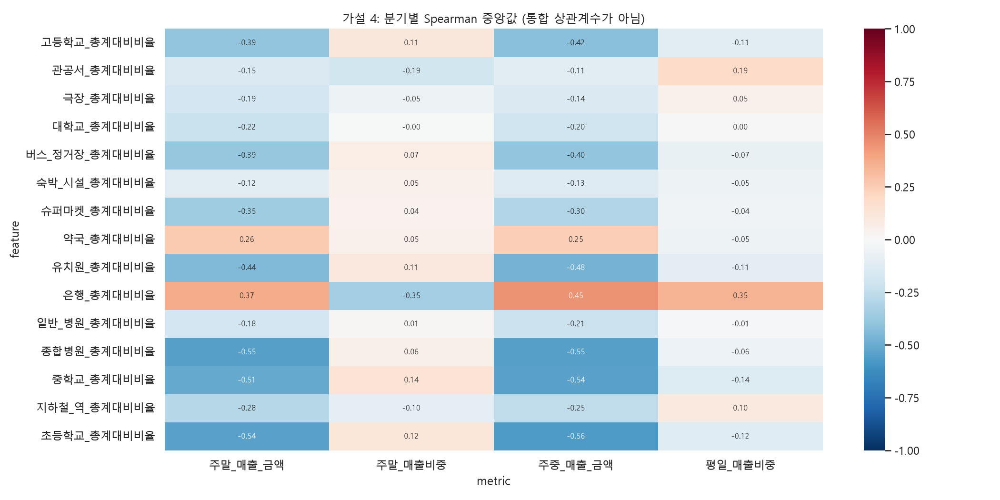
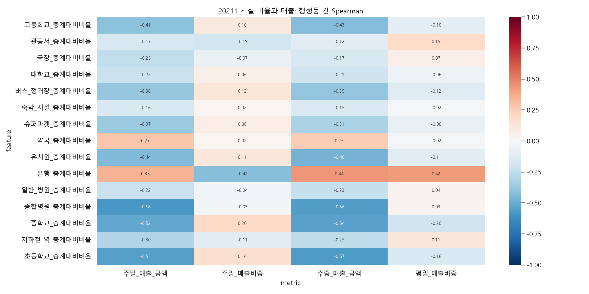
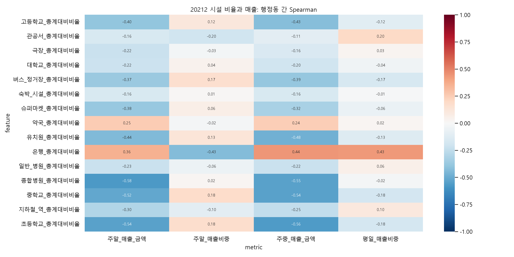
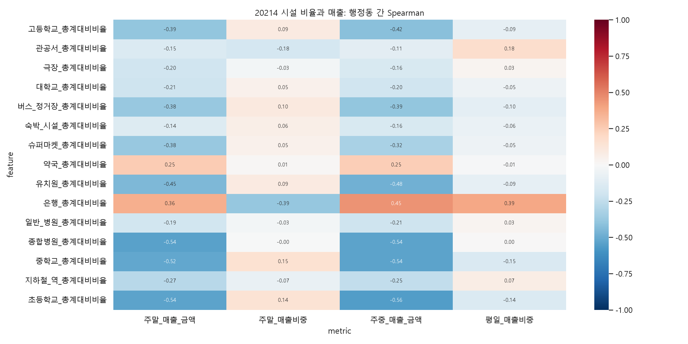
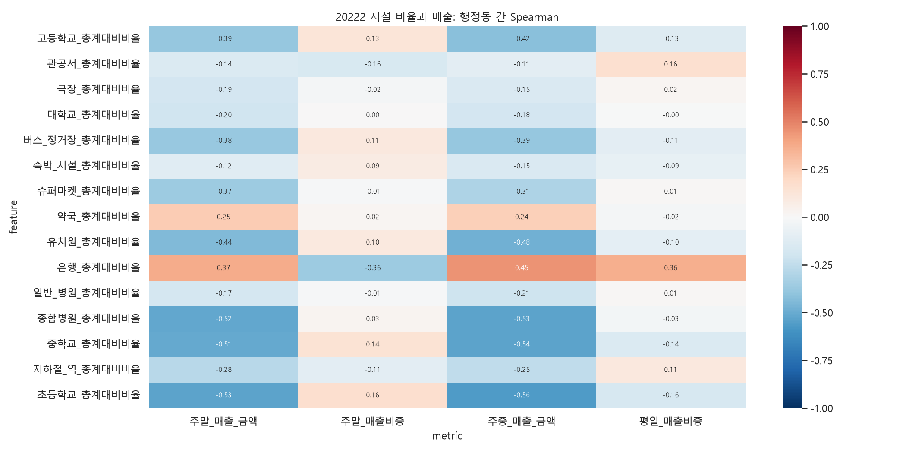
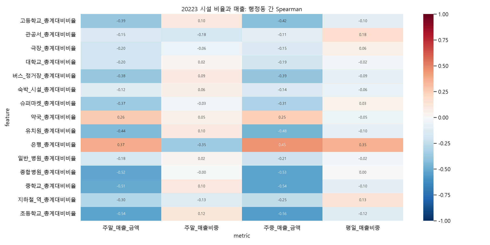
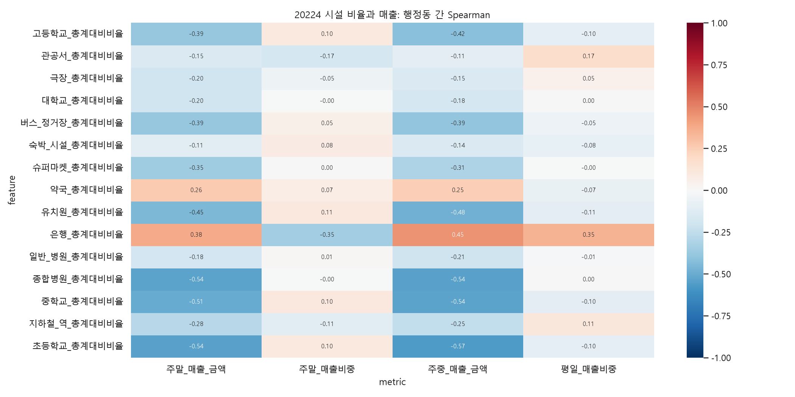
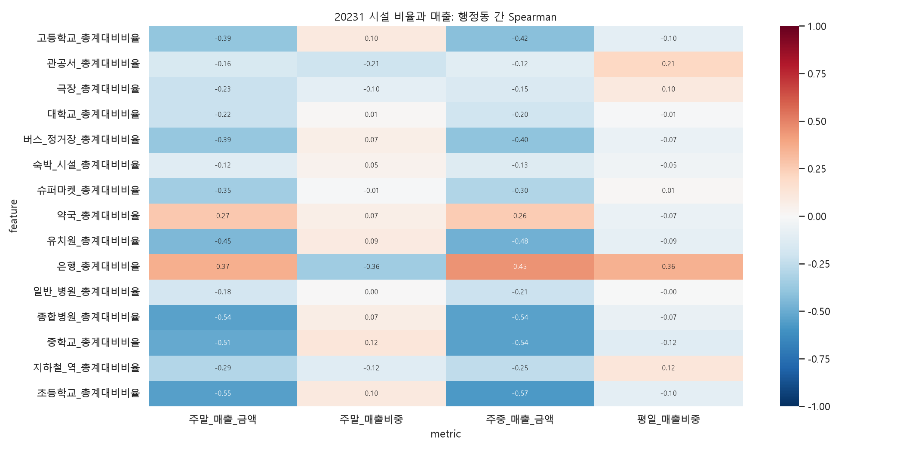
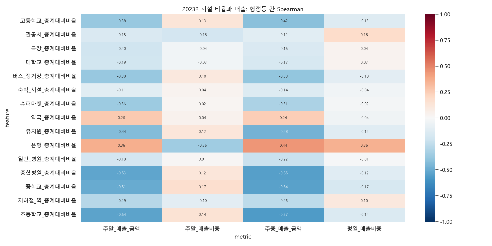
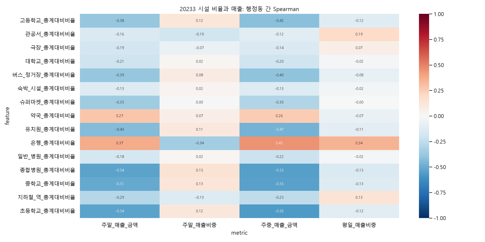
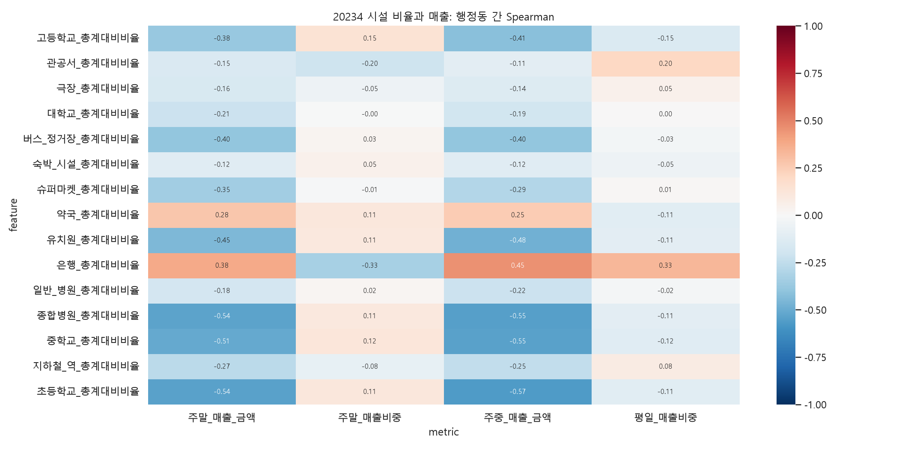
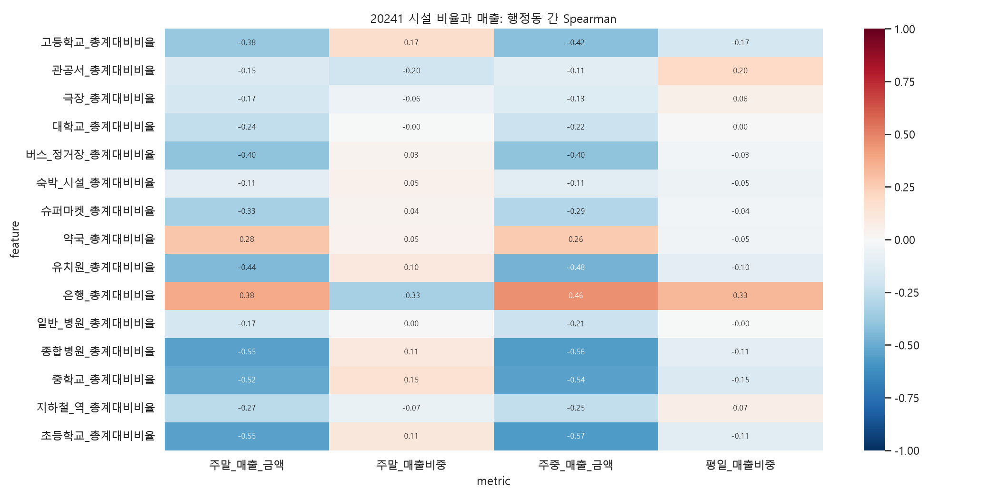
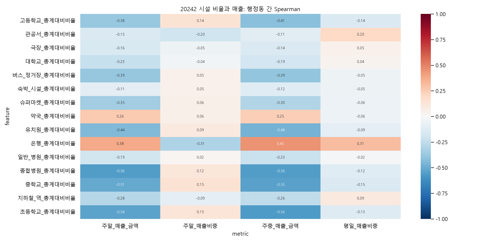
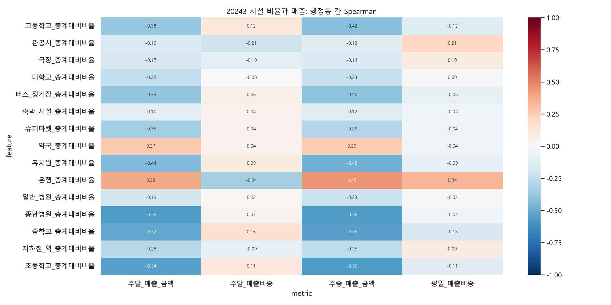
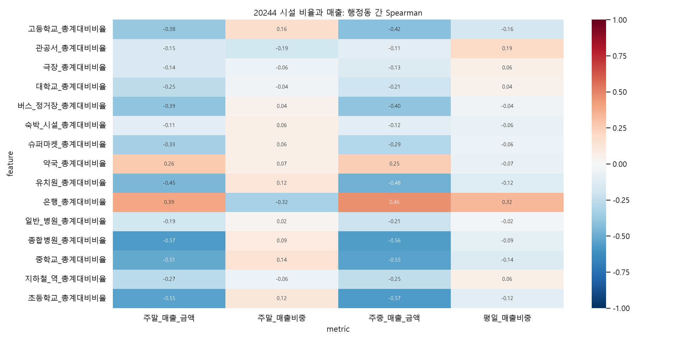
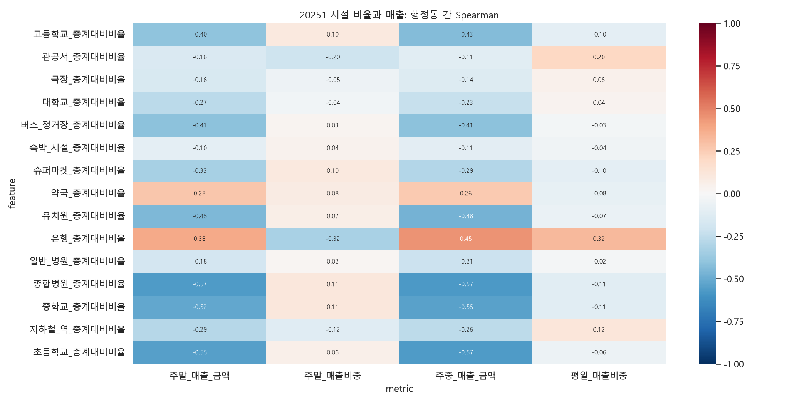
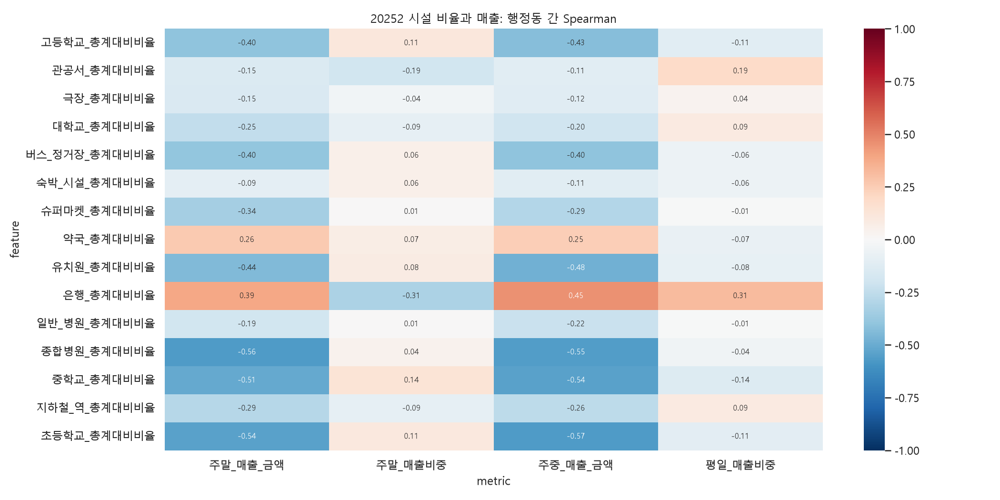
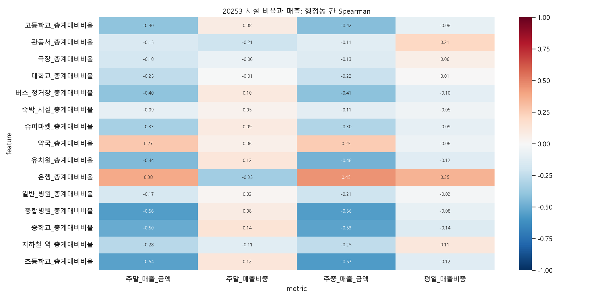
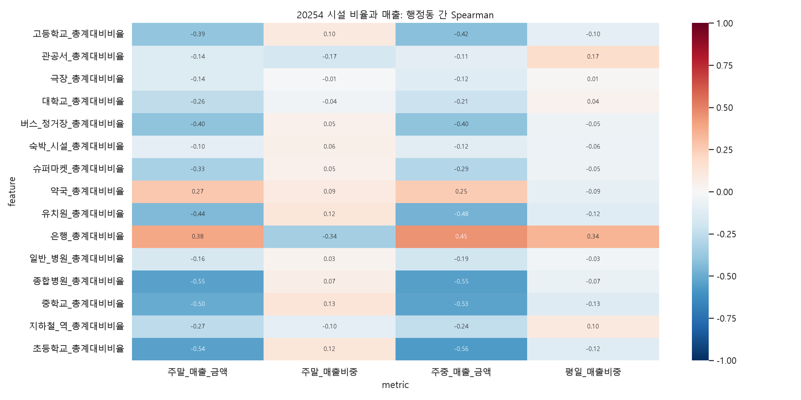
이번 실행은 4번 가설만 수행했으며 5번은 진행하지 않았습니다.